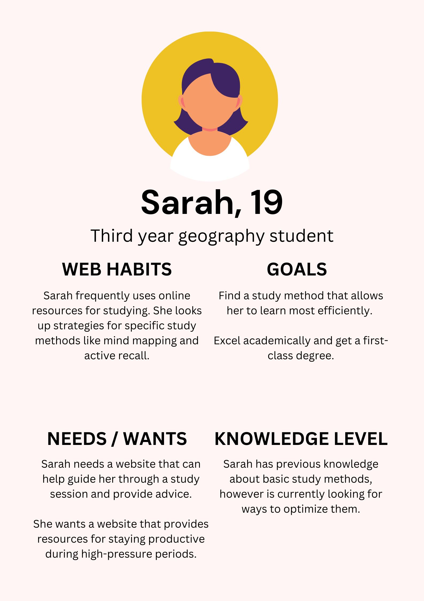
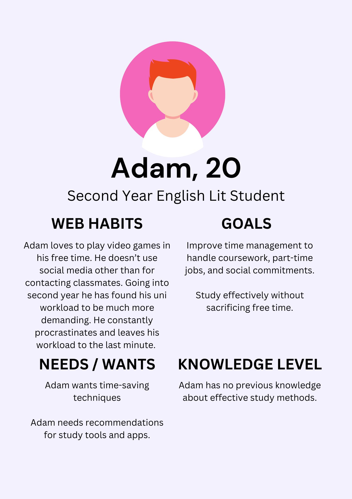
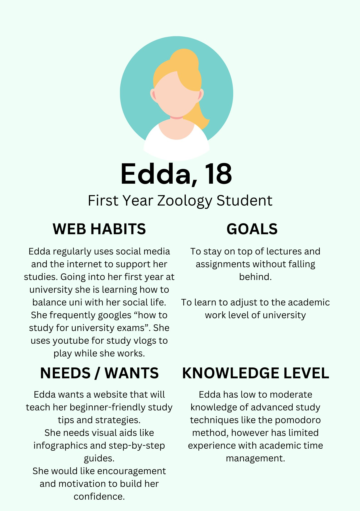
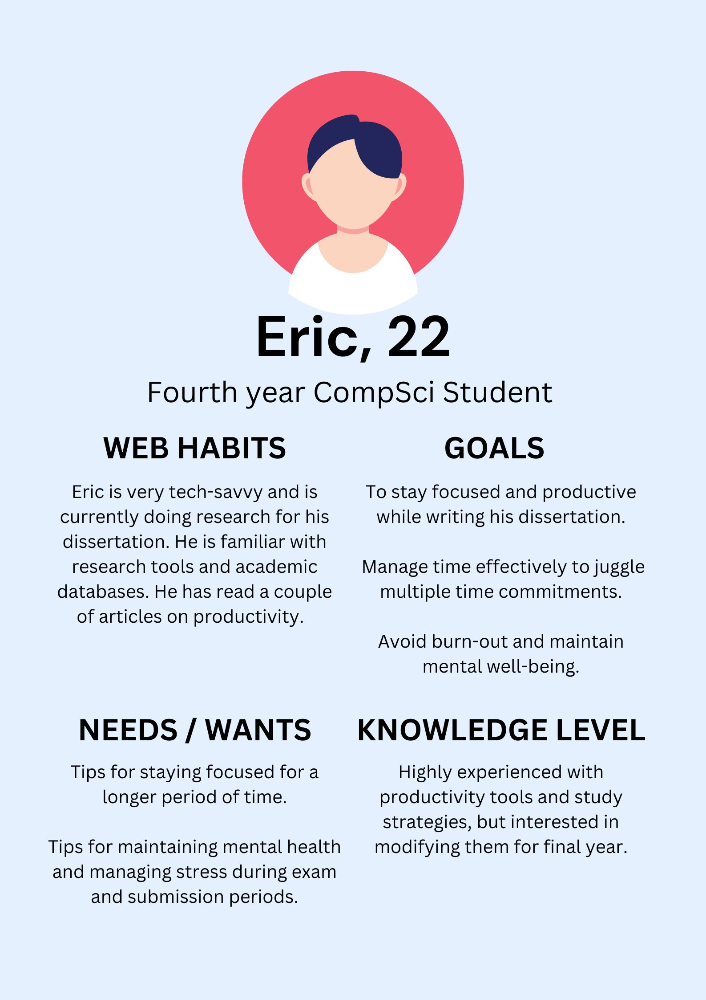

For my StudySesh website, my primary audience are:
| Audience Characteristic | Rationale |
|---|---|
| Age | Primarily undergraduate students at the University of Glasgow (18 - 24 year olds) |
| Gender | Gender-neutral audience: Inclusive of all genders to ensure that content is accessible and relatable to everyone. |
| Language Proficiency | Fluent and highly proficient English Language. They are likely familiar with academic language however would prefer minimal use of overly technical terms for better information comprehension. |
| Attitude toward writer or organisation | Audience may be skeptical to adopt or try new study methods different from what they know. However, they will be open to suggestions. Others may be seeking guidence and percieve this website as knowledgeable. |
| Knowledge of topic | This varies acorss different personas. Beginners (e.g first years) may have limited knowledge on advanced study techniques and how to manage the univeristy workload. Seasoned university students can range from moderate to high familiarity with study methods and techniques but interested in ways to tweak and add to what they already know. |
| Audience Action | After reading the website, I want my audience to have engaged with the content by reading the articles, or using the suggested tools and techniques. I want them to come back to the website, using it as a trusted resource and advocate for StudySesh as a valuable tool for learning support and productivity. |
The purpose of this task is to create Audience Personas based on information from the pervious task
   For my MAD (A) Project, I have chosen Students at the University of Glasgow as my Primary Audience. Although all students from primary to PHD struggle from challenges such as time management and maintaining focus, I specifically selected undergraduate students aged 18-22 because of the common and specific experiences shared amongst this age group. These include struggling with balancing new academic demands with part-time jobs and society events, along with living away from home for the first time which can lead to feelings of isolation and homesickness.
By targeting this audience, I aim to provide strategies that not only help them stay on top of their academic workload, but promote well-being and ensuring my audience knows how to take a break. Therefore, I have identified the following design needs for my website Study Sesh.
For this task, I have to select two or more websites to explore in detail.
| AUDIENCE | This website is aimed towards people who want to learn more about the Yale School of Art. E.g, prospective students, current students and teachers. This website serves as an ongoing collaborative experiment for all members of the Yale School of Art community. Allowing anyone to add and make edits to existing content. I think that the range and depth of information provided is appropriate for the topic and audience. It addresses what the school is, current and past exhibitions and events, how to apply to the school, and publications. This website also keeps note of who made the last edit. |
|---|---|
| AFFORDANCES, CONCEPTUAL MODELS AND SIGNIFIERS | The purpose of this project is a collaborative experiment in digital publishing and information sharing. This website is not easy to use however, after spending time to explore the website, I am able to navigate it. This however does not mean that the navigation or layout of the website is good nor should be replicated. Each page does have a title, to display where in the website you are. However, it is not easy to understand where you have been and where you are going. This website uses a lot of images, but as the background.The background images are also moving images with a button in the menu allowing you to pause the animation. Despite ability to pause the animation, it is still really distracting from the page content. |
| CONTRAST, REPETITION, ALIGNMENT, PROXIMITY | Background image does not enhance the presentation of information. The background on every page makes it hard to read. Even with the text displayed in its own solid colour text box, the colour contradicts the background making it harsh on the eyes. The layout of information also does not enhance the website. Although the placement of the menu is easy to locate, there are no sub categories to provide you with a map of where you are. There is also a quick links menu placed randomly on the homepage making it hard to navigate back. Some of the text boxes are sectioned to individual words making it hard to read due to the busy background images. The main menu on the left hand side is the only thing that is consistent. Everything else, the information and graphics, are very inconsistent. On some pages the information layout is centered to the middle of the page. On others, its centered to the left hand side. The background images also change on each page. Some of them are still images while others are animated with fast moving images. |
| CONTENT DESIGN | Despite the overwhelming and clustered design, this website addresses the needs of its audience by acting as an experiment. In terms of content, it does provide comprehensive information on academic programs, exhibitions, and events related to the Yale School of Art Community. The content is tailored to students and professionals making it relevant to the subject and audience. The content is not easily readable and relies on contributors for updates which may lead to inconsistency in reliability. The site also links external exhibitions and events that demonstrate engagement with the wider community. |
| AUDIENCE | This website is aimed at people who want to visit the Design Museum, become a member of the museum, and donate or purchase from the online shop. The range and depth of material seems appropriate for the topic and audience. The website provides multiple links to contact information aswell as a link to sign up to the newsletter. It also provides the links to the museums social media platforms where individuals can interact directly. |
|---|---|
| AFFORDANCES, CONCEPTUAL MODELS AND SIGNIFIERS | The purpose of this website is to provide all the information you need to plan your visit to the museum for the first time, or even donate/volunteer and become a member. This website is very easy to navigate. The main menu at the very top of the page also provides the subpages under each topic. This makes it easy to understand exactly where you are on the website. This website uses text and images to identify different sections on each page. |
| CONTRAST, REPETITION, ALIGNMENT, PROXIMITY | The layout, graphics and colour all add to the effective presentation of information. The use of the colour yellow is consistent throughout the whole website making the text easy to read. Unlike the previous website, the use of this colour works in favour of presentation. The website has good symmetry and all the information, navigation and graphics are laid out in a consistent way. Overall, this website is easy to read and understand. |
| CONTENT DESIGN | The website aims to engage visitors and caters to design enthusiasts including students and professionals. It offers extensive content, thoroughly covering the subject. The content is highly relevant to contemporary design and museum visitors, aligning with their goals. The websites content is clear and visually pleasing. The museum references other design exhibitions and collaboration, contributing to a broader understanding of the subject. |
After looking at the Yale Art School website, I think that the use of images as backgrounds would be unsuitable for my chosen audience. Unless the opacity is lowered. This is because image backgrounds can make a website look cluttered and may overwhelm my audience. Especially if my audience is already overwhelmed with their workload, and need a space for advice that they can learn quickly. Another thing I found unsuitable from this website would be the inconsistent colours. I think that especially on the homepage, it is important to have a set colour scheme so that the website is not overwhelming and easy to navigate. Colour schemes can also work to group information that is related to each other.
After looking at the Design Museum Website, I think that the type of menu is suitable for my audience. It is easy to locate, and makes the website easy to navigate as you can see where you have been, where you are, and where you can go next. Although the overall layout of the homepage is easy to understand and navigate, I think that for my audience and website, it would be better to have a menu that is physical as soon as you open the page. This is to ensure that my audience immediately understands where they are and how to navigate back. It will also show the overall topics that my website covers, allowing them to decide if they want to look somewhere else.